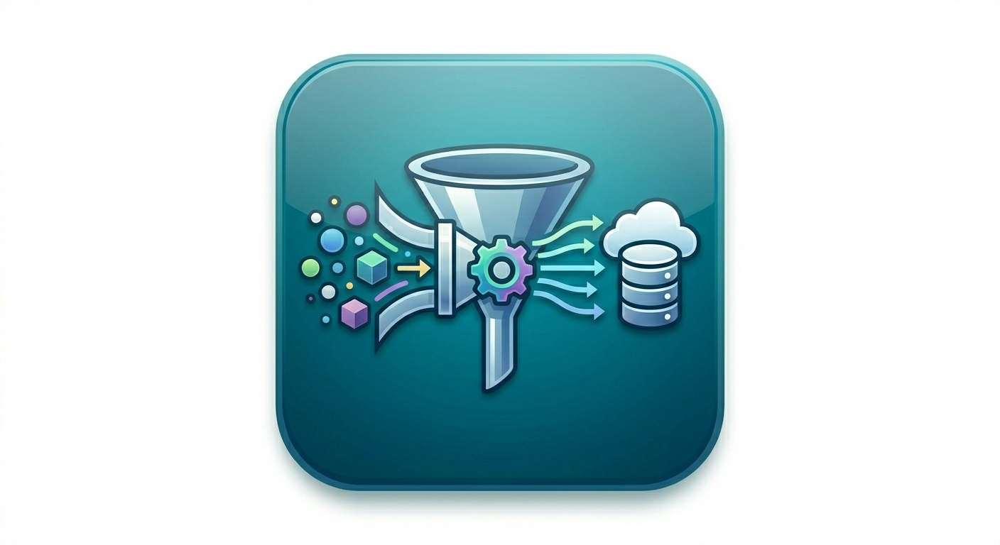

Desarrollador de Software Fullstack especializado en arquitecturas de microservicios y optimización de procesos digitales.
AWS Certified Cloud Practitioner
Más de 10 años de experiencia
01/2024 - 08/2025
VIRTUAL CREATE
06/2015 - 12/2023
ALTURA S.A.
05/2011 - 04/2014
ALTURA S.A.
Plataforma para la organización y seguimiento de proyectos y tareas, mejorando la productividad del equipo.

Herramienta de Extracción, Transformación y Carga para consolidar información de diversas fuentes de datos.
Módulo de firma electrónica para documentos digitales, garantizando seguridad y validez legal.
Sistema completo para la gestión, almacenamiento y recuperación de documentos y archivos empresariales.
Solución para la emisión de facturas electrónicas conforme a las normativas del SRI.
Integración con diversas pasarelas para la recepción de pagos, incluyendo Facilito, Banco Pacífico y BanRed.
Compras de productos de Amazon desde una tienda online mediante pagos con trasnferencia y tarjeta de crédito.